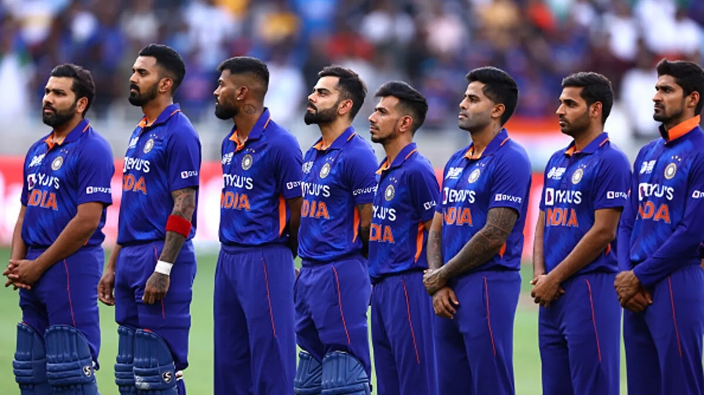
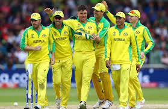
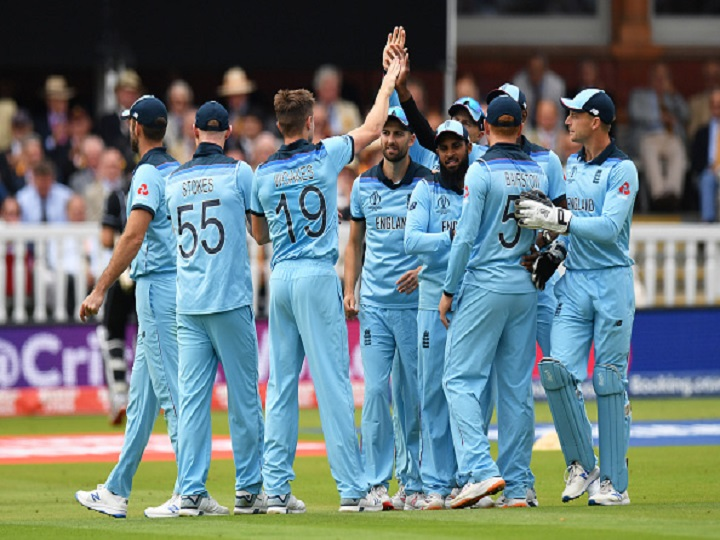

ICC T20 World Cup 2022: Who Will Win The T20 World Cup 2022
The 8th edition of the ICC Men’s T20 world cup 2022 is scheduled to be played in Australia
from Oct 16-Nov 13. A total of 16 teams will fight it out for the title. The top 8 teams
from the previous edition have already qualified. The other four teams- Namibia, Scotland,
Sri Lanka, and West Indies have made it through the previous tournament
Four more teams, Ireland, UAE, Zimbabwe, and the Netherlands have recently qualified for
the tournament from the ICC T20 World cup group qualifier round.
According to the fixtures of the ICC T20 World Cup 2022, the top 8 teams plus 4 qualifiers have been divided into 2 groups. These are:
Group A: England, New Zealand, Australia, Afghanistan, Sri Lanka & Netherlands Group B: India, Pakistan, South Africa, Bangladesh, Ireland & Zimbabwe
Team INDIA
Team India had a season to forget the last edition. After suffering a thumping defeat against
arch-rivals Pakistan in their first match, followed by another loss from New Zealand, the
men in blue could not proceed to the knockout stage. However, India will surely be one of the
favorites to win the title. With a new captain Rohit Sharma, the team looks settled.

Virat Kohli can play fearless cricket, given the fact that he has relinquished the captaincy.
India has all the firepower to dismantle any opposition. If they can hold their nerves and play
their perfect game in the park, they will be one of the teams to watch out for in the
ICC Men’s T20 world cup 2022.
In fact, many bookmakers have come out with very favorable odds for India to win the T20 World Cup
this year. As one of the top contenders for the trophy on most online cricket betting sites, India
has the outright odds of 4.30 at winning the World Cup, only behind Australia with odds of 4.0.
PAKISTAN
Pakistan had a memorable outing in the recently concluded ICC Men’s T20 world cup 2021. The side led by
Babar Azam showed the world what they are capable of. In fact, Pakistan was the only team that never
lost any game in the league stage, winning 5 matches on the trot. But, they lost at the hands of Australia
in the semi-final match, perishing all the hopes of their fans.
Their batting order has shown immense discipline with Babar Azam, Mohammad Rizwan, Shadab Khan, etc. They have
one of the best pace attacks with Shaheen Shah Afridi, Md Wasim, etc, firing from all cylinders. The teams would
ill afford to take Pakistan lightly this edition.
AUSTRALIA
The defending champions of ICC T20 World cup 2021, Australia, will start as the favorites to win the
ICC Men’s T20 world cup 2022. The side under the leadership of Aaron Finch proved why they are the best.
They have one of the best batting lineups with Cameroon Green, Finch, Maxwell, Wade, Stoinis, etc. Australia’s bowling
attack, especially the pace bowlers, can dismantle the bowling attack of any opponent.

The biggest advantage for them will be that the tournament will be played in their backyard, where Australia has always dominated.
ENGLAND
The fourth team with a high chance of winning the ICC Men’s T20 world cup 2022 is England. Eoin Morgan-led team dominated for most
of the last edition, but they failed to defeat New Zealand in the semi-final. If we talk of the most dangerous team on paper,
it’s mighty England.
